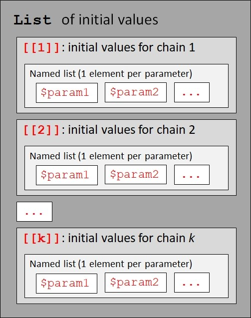

library(R2jags)
library(rjags)6 Introduction to JAGS
6.1 Overview and objectives
This week we will explore the basics of JAGS, a common software package for fitting models under Bayesian inference. Despite its conceptual elegance, Bayesian inference in practice is far more computationally intensive than frequentist inference. While computational methods for frequentist inference were optimized decades ago, methods for Bayesian inference are growing and improving rapidly. For these reasons most entry-level statistical packages such as R or SAS rely on extensions or separate programs to conduct the computations for Bayesian methods. In this module we will go over the steps of running a simple model in JAGS from R. This workflow will serve as a template for more complicated analyses throughout the semester.
By the end of this module you should be able to:
- Install R, JAGS, and R packages.
- Call and run JAGS from R.
- Specify simple models in the BUGS/JAGS language.
- Interpret outputs from JAGS to make inferences about biological systems.
For this module you will need:
6.2 Preliminary steps
6.2.1 Installing R
R is a software package used primarily for statistical analysis, as well as a programming language used to interact with the program. It is widely used in academia, government, and private industry for data analysis. Many on-campus computers at KSU already have R installed on them.
First, install the latest version of R from here (accessed 2026-07-24). Select a mirror (download server) from the list. You will be taken to a page where you will select the version of R that corresponds to your operating system. Click on the link for your OS and follow the instructions from there. Like many programs from the internet, R comes with an installer that will largely take care of everything automatically. Just let the installer run and accept the default options.
Optionally, you can install RStudio. It can be downloaded from here (accessed 2026-07-24). As with R, select the version that corresponds to your operating system. As you did when you installed R above, just let the installer run and accept the default options. In this class we will use the base R graphical user interface (GUI) for simplicity, but some people prefer RStudio.
This course assumes some basic familiarity with R and R programming; alternatively, some level of comfort with any command-line or programming interface. If you can write an Excel formula, you will probably be fine. If you need an introduction to or refresher on R, there are many free tutorials for R available on the web.
6.2.2 Install JAGS
JAGS, short for “Just Another Gibbs Sampler”, is a program for fitting models using Markov chain Monte Carlo (Plummer 2003). It is one of the most popular programs for Bayesian inference.
JAGS is hosted on SourceForge here (accessed 2023-01-05). Click the big green download button. After the program downloads, follow the on-screen instructions for the installation process. JAGS comes with its own installer much like any other program you download from the internet.
6.2.3 Installing R packages
JAGS is mainly designed to be called from other programs, so it doesn’t have a GUI. In order to call JAGS from R, you will need two packages: rjags (Plummer 2022) and R2jags (Su and Yajima 2021). Install these in R using the following commands. Click Yes or OK on any pop-up messages from R.
install.packages("rjags")
install.packages("R2jags")These packages will be installed to your personal R library. This means that they are only available under your operating system profile (log-in). If someone else logs into the same machine, they may have R installed but won’t have any add-on packages installed. This is because packages are stored in a folder tied to your operating system profile.
These packages are also specific to the version of R used to install them. Each version of R installed on your machine has its own library, or folder containing add-on packages. If you update R, you will need to reinstall any add-on packages.
6.3 Markov chain Monte Carlo sampling (MCMC)
6.3.1 Integral calculus is hard
In frequentist inference, most statistical models can be fitted by calculating model parameters that produce the best fit to the data. For example, for ordinary linear models, there is always a way to solve for the values of the coefficients that minimize the sum of squared errors. For other models, there is typically a closed-form solution or a robust approximation algorithm for finding optimal parameter values. In most programs for statistical analysis, including R, these calculations take place internally and the user has little, if any, exposure to them.
In modern statistical programs (including R), many models are fit by a method called maximum likelihood: finding the parameter values that result in the greatest value of the likelihood function. The likelihood function is an expression of how likely the observed data are conditional on the parameter values. In practice, most software actually minimizes the negative of the logarithm of the likelihood function (the “negative log-likelihood”). This is more convenient mathematically, and doesn’t really matter for the end user.
The take home message of the above paragraphs is that in frequentist inference, the model parameters are found by maximum likelihood (ML), also known as maximum likelihood estimation (MLE). MLE works by solving or approximating a solution to find optimal parameter values.
In Bayesian inference, it is rarely possible to solve for model parameters. The equations that would have to be solved usually have no closed-form solution, and are computationally intractable. These usually take the form of high-dimensional integrals. Given Bayes’ theorem:
\[p\left(\theta|x\right)=\frac{p\left(x|\theta\right)p\left(\theta\right)}{p\left(x\right)}\]
where \(\theta\) is the set of model parameters (i.e., the hypothesis \(H\)) and \(x\) is the data (i.e., the evidence \(E\)), the numerator is usually straightforward to calculate (it is the likelihood function time scaled by the prior probability of the parameter values).
The denominator, however, is actually very hard to calculate. It is defined as an integral over as many dimensions as there are parameters, which has to be computed over all possible parameter values, for all parameters, which can’t be done in a closed form way except for the simplest models. This means that optimization methods such as Newton-Raphson, which work well for finding a single best-fitting parameter value, cannot generally be used to solve the Bayesian problem because Bayesian inference requires integrating over the entire posterior distribution rather than finding a single optimum.
The solution for fitting Bayesian models is to use a process called Markov chain Monte Carlo (MCMC). This is a class of methods that combine Markov chains (a kind of sequence generating process) with random sampling (the Monte Carlo part, named after a European city famous for its casinos). These methods use probabilistic sampling to avoid having to compute that integral explicitly and instead approximate the posterior distributions by sampling from them.
A Markov chain is a stochastic process where some state (like a parameter value) changes over time according to probabilistic rules. Usually “time” is considered to be discrete, so the chain proceeds in “steps”. In a Markov chain, the state at the next step depends only on the state at the current step. In this way, the chain has a very weak memory and thus states at steps that are very far apart are usually considered to be nearly independent (usually).
6.3.2 Gibbs sampling
There are many kinds of MCMC algorithms. One of the most common is a method called Gibbs sampling. It is the “GS” in “BUGS” and “JAGS”. Gibbs sampling is actually a special case of a broader class of methods called Metropolis-Hastings methods. So, Gibbs sampling is a subset of Metropolis-Hastings sampling, which is a subset of MCMC methods, which are an alternative to maximum likelihood).
The basic procedure is as follows:
- Start with an initial value for each parameter in the set of parameters \(\theta\).
- Update the value of each parameter, conditional on the current value of the other parameters. This updating is done by drawing from the full conditional posterior distribution of the data given the other parameter values (despite using the phrase “maxmizes the likelihood”, this is NOT MLE).
- Use the updated values as the starting point for the next step.
- Repeat many, many times until the chain converged to the joint posterior distribution.
This basic procedure is a very simplified explanation, and glosses over a lot of math. But, it gives you the basic idea. The full details are not necessary to use MCMC, and are beyond the scope of this course.
6.3.3 What you need to know about MCMC
The more practical things you need to know are about MCMC are:
Chains can take many steps to find the posterior distribution
MCMC chains often start at initial parameter values that are essentially random and not representative of the posterior distribution. So, we discard the first part of a chain as burn-in. Many people use 10% or 20% as burn-in, but there is no universally agreed-upon rule. MCMC chains often need to be very long, many thousands of steps, to find robust approximations of the posterior distributions of all the parameters. In my own work I usually use $$100,000 steps, or $$250,000 for complicated models.
Chains are autocorrelated
The values in an MCMC chain can be correlated with values in nearby steps; in other words, chains are autocorrelated. To reduce the influence of this autocorrelation, some people thin the chains by only keeping every so many observations. Ratios of 1 in 20 or 1 in 100 are common. I usually thin my chains so that they end up with 1000 to 2000 posterior values. Note that in some software (e.g., stan), thinning is not recommended. However, thinning is still standard practice for using JAGS.
Chains might not find the posterior distribution
There is no guarantee that and MCMC chain will adequately explore the correct posterior distribution. Even if the initial prior distribution is appropriate and the data robust, there are still some chain pathologies to watch out for. Chains can fail to converge; become trapped near a local mode (but not the global mode); or mix poorly (the chains do not agree).
For this reason, most MCMC analyses use multiple chains. If the chains converge to the same stationary distribution, then we say the chains have converged. Most analyses use 3 chains, but some researchers use other numbers.
MCMC model fitting requires tuning
The parameters of the MCMC process often need to be optimized for an analysis. This process is referred to as tuning. Some people will try fitting models with different numbers of chains, different chain lengths, different thinning intervals, and different burn-in periods until they find a consensus. In my experience, this is usually overkill. My approach (which is very common) is to simply use a conservative set of tuning parameters—that is, a set of tuning parameters that is probably overkill and is thus very likely to find a good solution. As they say, brute force always works if you use enough.
One chain or many chains?
Some people argue that you should use 1 very long chain instead of 3 shorter chains. For example, 1 chain of 300,000 iterations instead of 3 chains of 100,000 iterations. Both approaches would get you the same number of posterior samples. In my own work I prefer the multiple chain approach, mostly because this helps avoid issues related to the choice of initial value.
6.4 JAGS workflow
The workflow for fitting Bayesian models in JAGS, called from R, is summarized in the flowchart below. Most of the steps take place within R, using R code (central grey box).
![Flowchart showing the workflow for fitting Bayesian models in JAGS using R. A dataset is imported into R, where pre-processing includes formatting the data, defining initial values, and specifying MCMC parameters. These inputs are passed to the `jags()` function, while a model written in the JAGS language is supplied separately. JAGS fits the model using Markov chain Monte Carlo and returns a results object to R. The results are then used for convergence diagnostics, model selection, plotting, and biological interpretation.](../images/04-01.jpg)
jags() function, which calls a model written in the JAGS language. JAGS fits the model using MCMC and returns a results object to R, where convergence is assessed and the posterior distributions are used for model selection, plotting, and interpretation.
6.4.1 Step 1: Data import
The dataset should be set up for import to R just like it would for a frequentist analysis. Ideally this is in a plain-text format like comma-separated values (.csv file) or tab-delimited values (.txt). The data should follow “tidy” data principles (Broman and Woo 2018; Wickham 2014), where each observation is a row, and each variable (column) contains only one kind of value. Note that some common R conventions, like using character strings to identify levels of a factor, are not compatible with the JAGS language. These issues will be addressed in the next step.
6.4.2 Step 2: Pre-processing steps
Before fitting a model in JAGS, we need to set up some objects that will tell JAGS what to do.
6.4.2.1 Format data
Data in R are usually held in a data frame. In order to go to JAGS, the data need to be repackaged into a list. Some kinds of data need to be reformatted:
- Character strings need to be replaced with integers. For example, a factor with levels
level1,level2, andlevel3needs to be recoded to1,2, and3. It is very important that you record how the values were recoded. - Values intended to be integers (e.g., counts) should be rounded (e.g.,
round(x, 0)). This is not always necessary, but sometimes non-integer values can sneak in if the data file was not saved correctly. Doing this is an extra safety check. - Variable names should be made simple, and not include any spaces.
6.4.2.2 Define initial values
Any stochastic value in the model—a model parameter—must be supplied with an initial value for each chain. These values should be drawn randomly from the prior distribution. The most common way I’ve seen is to write a function in R that randomly draws initial values and stores them in an object with the following structure:

6.4.2.3 Set MCMC parameters
Markov-chain Monte Carlo (MCMC) is inherently a stochastic process, so fitting models with MCMC involves some tuning. This means adjusting the parameters of the run so that the results make sense and are consistent from run to run. The following parameters need to be set for JAGS run:
| Parameter | Typical settings | Meaning |
|---|---|---|
| Number of chains | \(\geq3\) | Number of independent MCMC chains. Multiple chains are run to reduce the influence of initial values and reduce the chances of getting stuck in local optima. |
| Number of iterations | \(\geq50000\) | Number of steps in each MCMC chain. |
| Burn-in | 20% of iterations | The initial iterations of each chain are discarded as burn-in to reduce the influence of initial values and increase the likelihood of chain convergence. |
| Thinning interval | \(\geq20\) or \(\geq100\) | MCMC chains are thinned by keeping only iterations separated by the thinning interval. This reduces the influence of autocorrelation within a chain. |
For example, a researcher might run a model with 3 chains of 100,000 iterations, a burn-in period of 20,000, and a thinning interval of 100. They would end up with \(3\times(100000-20000) / 100 = 2400\) samples from the posterior distribution of each parameter. These 2,400 samples would be the basis for inference about the parameters. I try to make sure that I have at least 1000 to 2000 posterior samples for each parameter, but there is no universally agreed-upon rule.
Finally, the parameters to be “monitored” by JAGS need to be identified as a character vector. These are the parameters whose posterior distributions JAGS will keep track of. For example, if you fit a regression model, you need to tell JAGS to monitor the intercept, slope, and residual variance term. Otherwise, JAGS will fit the model but not return any posterior chains.
6.4.3 Step 3: Writing the model file
Models in JAGS are coded using a dialect of the BUGS modeling language (Lunn et al. 2000). The model specification must define the prior distribution of each parameter, the relationships between the parameters and the data, and any derived quantities of interest (more on this later). JAGS reads a model specification from a text file (.txt) or BUGS file (.bug). I prefer to use text files because they can be written easily from within R, and read on any machine. The model text file, as its file path, is provided to the jags() function that calls JAGS from R so JAGS knows where to look.
As we’ll see later, the BUGS/JAGS language is declarative, not imperative. This means that a model is specified by defining how the variables relate to each other, not by issuing a series of instructions to be executed in order.The order of most model statements does not determine the order of execution, because JAGS uses them to construct a directed acyclic graph of dependencies.
This can be a bit confusing to new users. Most of us are used to writing code like this:
Do thing 1
Do thing 2
Do thing 3But JAGS code works like this:
Object A depends on Object B
Values in Object B are drawn from a normal distribution with mean = 2 and sd = 1
Variable C is calculated from Object A6.4.4 Step 4: Running JAGS from R
All of the objects and files produced in the pre-processing steps are included as inputs to the function jags(). This function will package everything up and send it to JAGS. JAGS will then run the model, occasionally printing status updates to the R console. Depending on the size of the dataset and the complexity of the model, this step can eat up a lot of memory and processor capacity. So, save everything before you start JAGS!
When JAGS is done it will return the results to R so they can be saved in an object. This is why you should always assign the output of jags() to an object:
resultobject <- jags(...)There is nothing so frustrating as waiting 3 days for a model to run only to find that the output wasn’t saved anywhere!
6.4.5 Step 5: Post-processing steps
After you run the model in JAGS and get an output, the real work begins. Unlike a frequentist model that has essentially everything calculated for you automatically, a Bayesian model output needs to be carefully inspected. This is, in no small part, because there are no universally accepted criteria for model acceptance or rejection the way there are for frequentist models.
Every project’s workflow is a little different, but most involve at least these steps:
- Convergence: checking to see whether the MCMC chains converged on the same posterior distribution. Basically, this means that the chains agree with each other . If chains do not agree, this could indicate any number of problems: (1) the model needs to be run for longer; (2) the tuning parameters need to be adjusted; (3) the model is poorly defined or does not fit; (4) the initial values have a lot of influence; or some combination of these (or another problem all together…here be dragons).
- Model selection: Just as in frequentist inference, we often fit several models representing alternative hypotheses, and try to identify which model best fits the data. JAGS calculates a metric called the deviance information criterion (DIC) that can be used in a manner analogous to the Akaike information criterion (AIC) .
- Plotting: Plotting the model and its predictions (and uncertainty) is one of the best ways to present the results of any analysis. Predicted values and the uncertainty surrounding those predictions are trivially easy to calculate with posterior distributions—because we have thousands of samples from the posterior distribution of each parameter, we can automatically get a distribution of the response variable conditional on those distributions. This neatly solves the error propagation problem inherent in frequentist models .
- Interpretation: The values from each chain are samples from the posterior distributions of each parameter. These samples, and summaries thereof, can be used to make inferences about the parameters.
6.5 Specifying models in JAGS
JAGS has its own language for programming models. This language is almost identical to the language developed for an older family of programs, WinBUGS and OpenBUGS (“BUGS” is short for “Bayesian inference Using Gibbs Sampling”). So, almost any code example written for WinBUGS or OpenBUGS should also work for JAGS . Much of the syntax of JAGS is like the syntax of R, so R users often have an easy time learning BUGS and JAGS.
The biggest difference between the JAGS and R languages are in how commands are interpreted. R is usually imperative: commands are executed in the order in which they are written, one after another. JAGS, however, is declarative: commands define the relationships between objects and parameters. This difference can be very confusing to new users, especially users without much programming experience.
One way to think of a JAGS program is as the definition of a directed acyclic graph (DAG). This is a way of representing the connections between components of a system (like a statistical model). For example, the directed acyclic graph for an ordinary linear regression model is shown below:

The graph shows that each observed \(y\) value \(y_i\) is determined by its expected value \(E\left(y_i\right)\) and the residual standard deviation \(\sigma_{res}\). The expected value is determined by the observed \(x\) value \(x_i\) and the model parameters \(\beta_0\) and \(\beta_0\).
The key components of JAGS code are deterministic nodes and stochastic nodes.
Deterministic nodes have no random component. They are defined with a <-, just like assignment in R.
eta[i] <- beta0 + beta1 * x[i]Stochastic nodes have a random component. They are defined with a ~. Think of this symbol as “distributed as”.
y[i] ~ dnorm(eta[i], tau[i])One important thing to remember is that each node can only be defined once. This is because defining a node more than once is tantamount to having a cycle in the graph, which is not allowed in JAGS.
Another key difference between R and JAGS is that R is vectorized, while JAGS is not. For example, the following R code is valid, no matter how many elements are in x:
eta <- 0.5 + 2 * xThe same expression or relationship in JAGS must be coded in a for() loop:
for(i in 1:n){eta[i] <- 0.5 + 2 * x[i]}When expressions like this are used, the size of the deterministic node (eta) is defined implicitly by the loop length n. This can be a bit confusing if you are used to declaring object sizes explicitly.
6.6 Example analysis: two-sample t-test
Let’s put all of this together and run a simple analysis—a two-sample t-test—in JAGS. We will simulate our own data so that we can check the results.
Some of this tutorial is inspired by chapter 7 of Kéry (2010), but implemented differently.
First, simulate two sets of normal deviates with known means (mu1 and mu2) and SD (sigma1 and sigma2):
set.seed(123)
# true parameters
n <- 20
mu1 <- 10
mu2 <- 20
sigma1 <- 3
sigma2 <- 6
# draw values
y1 <- rnorm(n, mu1, sigma1)
y2 <- rnorm(n, mu2, sigma2)
# assemble data frame
# note grouping variable x is
# coded as a number because
# that's what works in JAGS
y <- c(y1, y2)
x <- rep(1:2, each=n)Next, we need to define the model file. There are several ways to code the two-sample t-test—we’ll use the means parameterization. Means parameterization refers to the fact that the model is specified in terms of the group-level means, rather than in terms of the between-group effect. This is a little different than the way that most frequentist methods describe models. We’ll try the effects parameterization later.
# means parameterization of two-sample t-test
# with equal variances
mod.name <- "jags_ttest_01.txt"
sink(mod.name)
cat("
model{
# priors
for(i in 1:2){
## group means
mu[i] ~ dnorm(0, 0.001)
## residual and precision
sigma[i] ~ dunif(0.0001, 10)
tau[i] <- 1 / (sigma[i]^2)
}#i
# likelihood
for(i in 1:n){
y[i] ~ dnorm(mu[x[i]], tau[x[i]])
}#i
# derived parameters
effect <- mu[2] - mu[1]
}#model
", fill=TRUE)
sink()The pair of sink() commands will write everything between them to the specified file…in this case, a text file in the R home directory.
Next, make a vector of names of parameters to monitor. These parameters will be reported in the results table at the end.
# parameters to monitor
params <- c("mu", "effect", "sigma")Set MCMC parameters: number of iterations, length of burn-in, thinning interval, and number of chains.
# MCMC parameters
n.iter <- 5e4
n.burnin <- 1e4
n.thin <- 100
nchains <- 3Every stochastic node in the model must be supplied an initial value. JAGS can guess at appropriate initial values, but these guesses tend to cause trouble. The best way, in my experience, is to write a function that returns a list with an element for each chain. Each element is itself a list, with a named element for each stochastic node that needs an initial value.
# function to define initial values for MCMC chains
init.fun <- function(nc){
res <- vector("list", length=nc)
for(i in 1:nc){
res[[i]] <- list(mu=rnorm(2, 0, 100),
sigma=runif(2, 0.001, 10))
}
return(res)
}
inits <- init.fun(nchains)Package up the data for JAGS in a list. Each element of the list must be named, and these names must match the variables in the model file exactly. JAGS, like R, is case-sensitive.
# package data for JAGS
in.data <- list(y=y, x=x, n=length(x))Finally, run the model with the jags() command. All of the objects we’ve created so far, including the text file with the model code, are inputs to this function. If there is something wrong with your model or the inputs, an error message will appear at this stage.
mod01 <- jags(data=in.data, inits=inits,
parameters.to.save=params,
model.file=mod.name,
n.chains=nchains, n.iter=n.iter,
n.burnin=n.burnin, n.thin=n.thin)#jagsCompiling model graph
Resolving undeclared variables
Allocating nodes
Graph information:
Observed stochastic nodes: 40
Unobserved stochastic nodes: 4
Total graph size: 96
Initializing modelThe model should take \(\leq1\) minute to run. Once it’s done, print the model object to the R console to see the output.
mod01Inference for Bugs model at "jags_ttest_01.txt", fit using jags,
3 chains, each with 50000 iterations (first 10000 discarded), n.thin = 100
n.sims = 1200 iterations saved. Running time = 3.71 secs
mu.vect sd.vect 2.5% 25% 50% 75% 97.5% Rhat n.eff
effect 9.276 1.427 6.379 8.360 9.286 10.225 11.950 1.007 280
mu[1] 10.421 0.691 9.047 9.983 10.439 10.882 11.733 1.006 350
mu[2] 19.697 1.243 17.117 18.937 19.694 20.506 21.999 1.004 510
sigma[1] 3.122 0.555 2.264 2.758 3.037 3.418 4.431 1.002 840
sigma[2] 5.346 0.948 3.818 4.682 5.219 5.887 7.525 1.002 840
deviance 222.972 3.172 218.981 220.670 222.141 224.621 230.495 1.003 670
For each parameter, n.eff is a crude measure of effective sample size,
and Rhat is the potential scale reduction factor (at convergence, Rhat=1).
DIC info (using the rule: pV = var(deviance)/2)
pV = 5.0 and DIC = 228.0
DIC is an estimate of expected predictive error (lower deviance is better).The first column to check is Rhat (\(\hat{R}\), “R hat”), the Gelman-Rubin statistic. This statistic is a heuristic for assessing whether the chains have converged on the same posterior distribution for a parameter. There is no universally-accepted rule, but most people require \(\hat{R}\) \(< 1.01\) or \(<1.001\) before they consider a parameter converged. Models with unconverged parameters should be treated as highly suspect (or better yet, run with longer chains). Convergence does not indicate anything about “statistical significance”, only how consistent the model’s estimate of the posterior distribution is.
Second, we check that the number of effective samples (n.eff) is close to n.sims (i.e., number of iterations saved). If not, then there may be autocorrelation in the chains. The chains should be inspected, and the model may need to be rerun with a longer thinning interval. In our case, most of the parameters have n.eff = 1200, the number of iterations saved, so we’re probably fine.
Finally, check out the summaries of the posterior distributions for each parameter. The estimated means are about \(10.42\pm0.607\) for group 1 (i.e., y1) and \(19.870\pm0.643\) for group 2. Is this correct? R also prints various quantiles to help us get a sense of the posterior distributions.
The estimated residual SD was \(2.8\pm0.33\). Is this correct? Finally, the estimated effect (μ1 – μ2) was 9.448 ± 0.883, with a 95% credible interval (CRI, not CI) of [7.72, 11.21]. Compare all of this to the output of a conventional one-sample t-test:
t.test(y~x)
Welch Two Sample t-test
data: y by x
t = -7.181, df = 30.672, p-value = 4.784e-08
alternative hypothesis: true difference in means between group 1 and group 2 is not equal to 0
95 percent confidence interval:
-11.900862 -6.634309
sample estimates:
mean in group 1 mean in group 2
10.42487 19.69246 The Bayesian estimate of the difference in means is essentially the same as the estimate from the frequentist version of the test. This illustrates an important point: given non-informative (vague) priors, a Bayesian analysis will return essentially the same parameter point estimates as a frequentist analysis.
6.7 Basic model diagnostics
6.7.1 Convergence: Rhat (\(\hat{R}\))
The Gelman-Rubin statistic, usually abbreviated Rhat (R̂), is a heuristic for assessing whether the chains have converged on the same posterior distribution for a parameter. There is no universally-accepted rule, but most people require R̂ < 1.01 or <1.001 before they consider a parameter converged. Models with unconverged parameters should be treated as highly suspect (or better yet, run with longer chains). Many people mistake R̂ for a kind of P-value that indicates whether parameters are “statistically significant”. However, this is a mistake. First and foremost, the concept of “statistically significant” is inherently a frequentist notion. It is not well- or easily-defined in Bayesian inference. Even so, think of what it means in a frequentist context for a parameter to be statistically significant. A “significant” effect is inferred to be different from 0. This doesn’t say anything about whether the parameter has converged! The point here is that parameter convergence has nothing to do with parameter significance. Convergence means only that the model reached a stable, consistent solution (i.e., posterior distribution). That solution may or may not include 0 in its credible interval. I.e., may or not be “significant” from a frequentist perspective (more on this below in 5.4.3). Lack of convergence says more about whether a parameter is well-defined, or is even identifiable, than what its value is. If a model has non-converged parameters, you have three options. You should try these in order. First, try tuning the model by running longer chains, varying the thinning interval, and varying the burn-in period (or some combination of these). Some models just take more sampling to converge, and that’s okay. Second, try reformulating the model without the non-converging parameter. If a parameter cannot be reliably identified (i.e., a unique solution found), then it probably shouldn’t be in the model anyway. This often happens when a parameter only occurs in conjunction with another parameter. E.g., in the classic Cormack-Jolly-Seber (CJS) mark-recapture model, the survival probability and capture probability for the last time interval (ϕt and pt) are not identifiable because they occur in the model likelihood only as a product (i.e., ϕtpt). The problem of identifiability can also arise in designed experiments when certain treatments or combinations of treatments are not sufficiently replicated. Third, you can use your biological judgment. Some non-converged parameters are not problematic because of what they represent. For example, non-converged group-level random effects may not matter because these effects are not of biological interest—that is what it means to model something as a random effect!
6.7.2 Convergence: MCMC chains
While the Rhat offers a quick, numerical summary of convergence, you can also inspect the MCMC chains themselves for a visual check on convergence. Well-mixed chains that fluctuate around a common stationary distribution provide visual evidence that the sampler has converged.
This needs to be done one parameter at a time. Usually I will produce one plot for each parameter. The examples below uses the effect parameter from model 1, but the procedure is the same for any parameter.
One of the primary visual tools for convergence assessment is the traceplot. You can get one with function traceplot( in package R2jags.
traceplot(mod01, varname="effect")
This traceplot shows that the distributions within the chains overlap (are “well-mixed”), and the chains are essentially stationary (do not move up or down).
If you want a more customized traceplot, you can extract the values from the model output. The MCMC chains are stored in the model output in several formats. For plotting the chains, we want the values in the $BUGSoutput$sims.array. These are the raw MCMC chains in a 3-way array that have not been permuted (i.e., the values are in the same order as they were sampled in the MCMC process).
6.7.3 Posterior distributions
Often the model outputs we are most interested in are the posterior distributions. These represent the estimated distributions of each parameter as supported by the data. We can learn a lot from the model outputs printed to the R console.
For each parameter, JAGS returns and R prints the posterior mean and SD (mu.vect and sd.vect) as well as various quantiles of the posterior distribution. These quantiles are sample quantiles of the values from the 3 MCMC chains.
The nature of the posterior distribution depends in large part on the prior distribution. Most Bayesian models are formulated using conjugate priors: prior distributions that, under certain conditions, are guaranteed to result in certain posterior distributions. In model 1, the prior distributions for parameters other than sigma were normal. The normal is conjugate prior to itself: a normal prior will update to a normal posterior. For sigma, we used a uniform (which does not have a conjugate posterior) because we wanted to guarantee the domain of the variable (\(\geq0.0001\)). It may have been more appropriate to use an overdispersed gamma distribution or a lognormal distribution (some textbooks recommend this for variance or SD terms). However, in practical terms, a uniform distribution will be very similar to a normal with very large variance within the range of the uniform.
Practically speaking, if an appropriate conjugate prior is used then the posterior distribution will almost always be normal. Thus, the posterior distribution can be summarized by the posterior mean and SD (\(\mu_{post}\) and \(\sigma_{post}\)). If the normal distribution is not appropriate for a variable (e.g., for term which must be non-negative), then plotting its posterior distribution may be helpful. It’s worth noting that non-negative distributions can be modeled well by the lognormal distribution, which is its own conjugate prior.
For plotting posterior distributions, we can use any of the sets of values stored in the model output.
mx <- mod01$BUGSoutput$sims.array[,,"sigma"]
# convert matrix to vector (just in case)
mx <- as.numeric(mx)
hist(mx, main="residual SD (sigma)")
Sometimes it can be useful to plot two parameters on the same plot. This time we’ll use a kernel density plot instead of a histogram.
mx1 <- mod01$BUGSoutput$sims.array[,,"mu[1]"]
mx2 <- mod01$BUGSoutput$sims.array[,,"mu[2]"]
# convert matrix to vector (just in case)
plot(density(mx1), lwd=3, xlim=c(0, 30),
main="")
title(main=expression(Posterior~densities~of~mu[1]~and~mu[2]))
lines(density(mx2), lwd=3, col="red")
6.7.4 Predicted values
Finally, we can produce plots of predicted values and their credible intervals. This isn’t really useful for a t-test (where a garden variety R boxplot works just fine), but can be extremely useful for more complicated models (especially GLMs and mixed models). We’ll explore how to do that next week when we explore other linear models.